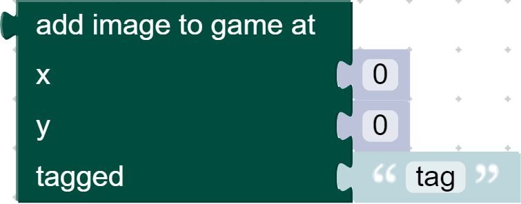
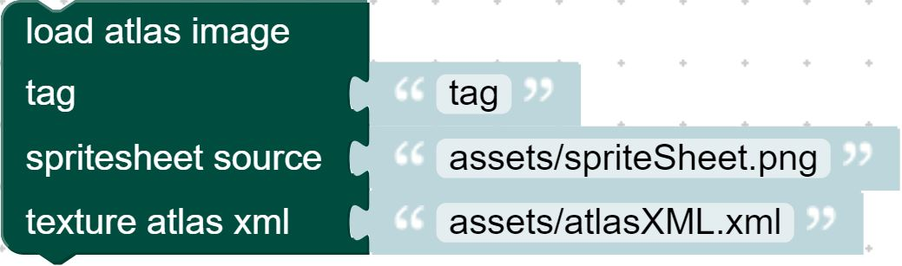
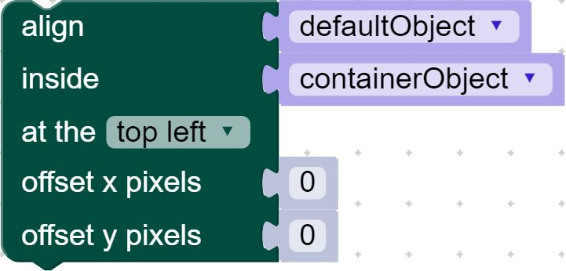
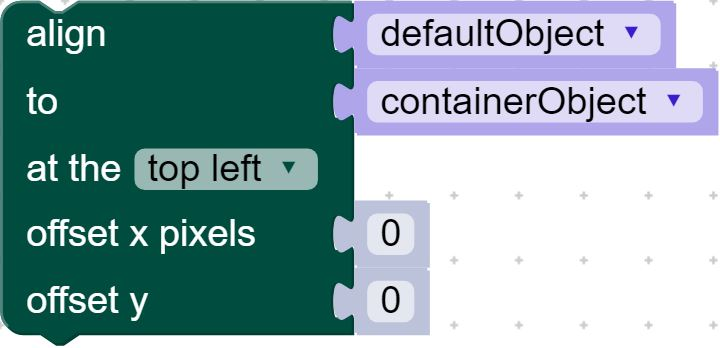
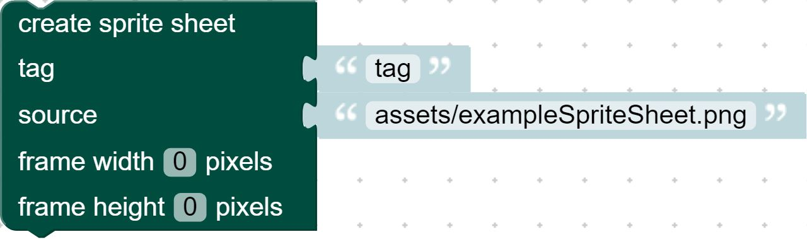
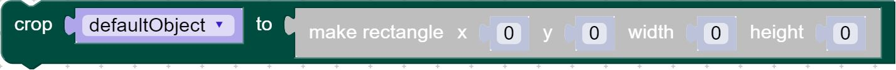
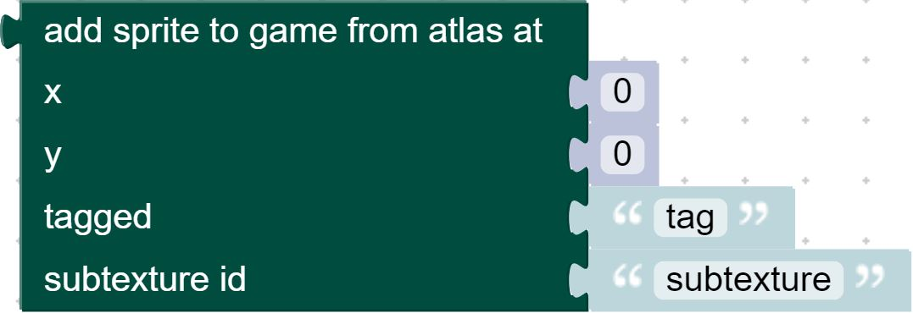
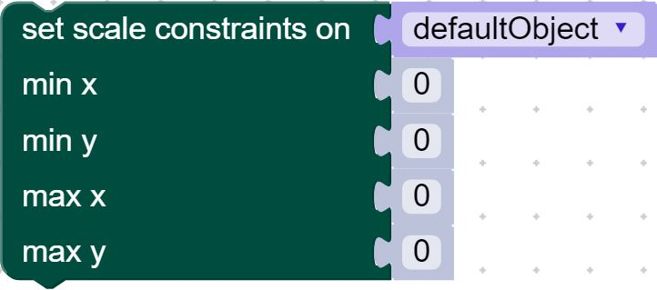

- Source:
Methods
-
<static> add_child_at_vi(object, child, index)
-
Adds a child to the given object at the given index. Check out Phaser documentation for a more in depth explanation.Parameters:
Name Type Description objectthe object to add a child to
childthe child to add to the object
indexNumber the index to add the child to
- Source:
Returns:
object.addChildAt(child, index); -
<static> add_child_vi(object, child)
-
Adds a child to the given object. Check out Phaser documentation for a more in depth explanation.Parameters:
Name Type Description objectthe object to add a child to
childthe child to add to the object
- Source:
Returns:
object.addChild(child); -
<static> add_image(x, y, tag)
-

Create a sprite based on an image. Check out Phaser documentation for a more in depth explanation.Parameters:
Name Type Description xNumber x position of the sprite
yNumber y position of the sprite
tagString the tag of the image to use for the sprite
- Source:
Returns:
game.add.sprite(x, y, tag); -
<static> addspritewithatlas(tag, source, xml)
-

Create an atlas image to be used in the game. Check out Phaser documentation for a more in depth explanation.Parameters:
Name Type Description tagString the tag that defines the image
sourceString the file path of the image
xmlString the file path of the xml file
- Source:
Returns:
game.load.atlasXML(tag, source, xml); -
<static> align_in(object, container, position, offset_x, offset_y)
-

Align an object inside of another object. Check out Phaser documentation for a more in depth explanation.Parameters:
Name Type Description objectobject to align
containerobject to align to
positionNumber position to justify the alignment to
offset_xNumber horizontal adjustment of the alignment
offset_yNumber vertical adjustment of the alignment
- Source:
Returns:
object.alignIn(container, Phaser.position, offset_x, offset_y); -
<static> align_to(object, container, position, offset_x, offset_y)
-

Align an object to the side of another object. Check out Phaser documentation for a more in depth explanation. Check out Phaser documentation for a more in depth explanation.Parameters:
Name Type Description objectobject to align
containerobject to align to
positionNumber position to justify the alignment to
offset_xNumber horizontal adjustment of the alignment
offset_yNumber vertical adjustment of the alignment
- Source:
Returns:
object.alignTo(container, Phaser.position, offset_x, offset_y); -
<static> bring_to_top(object)
-
Render an object on top of all other objects. Check out Phaser documentation for a more in depth explanation.Parameters:
Name Type Description objectobject to render
- Source:
Returns:
object.bringToTop(); -
<static> check_world_bounds(object, bool)
-
If true, the game checks every frame to see if an object is within the world bounds, and returns a boolean with the result. Check out Phaser documentation for a more in depth explanation.Parameters:
Name Type Description objectobject to check
boolBoolean enables/disables checking world bounds
- Source:
Returns:
object.checkWorldBounds = bool; -
<static> clear_cropping(object)
-
Clear the cropping on an object's image. Check out Phaser documentation for a more in depth explanation.Parameters:
Name Type Description objectobject whose image is cropped
- Source:
Returns:
object.crop(); -
<static> clear_scale_min_max(object)
-
Clears all scale constraints set on the object. Check out Phaser documentation for a more in depth explanation.Parameters:
Name Type Description objectobject to clear scale constraints from
- Source:
Returns:
object.setScaleMinMax(); -
<static> contains_vi(object, child)
-
Checks if an object contains the given child. Check out Phaser documentation for a more in depth explanation.Parameters:
Name Type Description objectobject to check
childchild to check
- Source:
Returns:
object.contains(child); -
<static> create_image(tag, source)
-
Create an image to be used in the game. Check out Phaser documentation for a more in depth explanation.Parameters:
Name Type Description tagString the tag that defines the image
sourceString the file path of the image
- Source:
Returns:
game.load.image(tag, source); -
<static> create_sprite_sheet(tag, source, width, height)
-

Create a sprite sheet from an image. Check out Phaser documentation for a more in depth explanation.Parameters:
Name Type Description tagString the tag that defines the image
sourceString the file path of the image
widthNumber the width of each frame
heightNumber the height of each frame
- Source:
Returns:
game.load.spritesheet(tag, source, width, height); -
<static> crop(object, rectangle)
-

Crop the image of an object to the given rectangular bounds. Check out Phaser documentation for a more in depth explanation.Parameters:
Name Type Description objectobject whose image is getting cropped
rectanglePhaser.Rectangle the rectangle bounds and properites to use for the crop
- Source:
Returns:
object.crop(rectangle); -
<static> destroy_sprite(object, bool)
-
Destroy the given sprite object. Check out Phaser documentation for a more in depth explanation.Parameters:
Name Type Description objectobject to destroy
boolBoolean whether or not the sprite's children should also be destroyed
- Source:
Returns:
object.destroy(bool); -
<static> get_child_at_vi(object, index)
-
Get the child at the given index. Check out Phaser documentation for a more in depth explanation.Parameters:
Name Type Description objectobject to get the child from
indexNumber index the child is located at
- Source:
Returns:
object.getChildAt(index); -
<static> get_child_index_vi(object, child)
-
Get the index of the given child. Check out Phaser documentation for a more in depth explanation.Parameters:
Name Type Description objectobject to get the child from
childchild to get the index from
- Source:
Returns:
object.getChildIndex(child); -
<static> imagesubtextureatlas(x, y, tag, id)
-

Create a sprite based on an atlas image. Check out Phaser documentation for a more in depth explanation.Parameters:
Name Type Description xNumber x position of the sprite
yNumber y position of the sprite
tagString the tag of the image to use for the sprite
idString the id of the xml texture to use for the sprite
- Source:
Returns:
game.add.sprite(x, y, tag, id); -
<static> load_texture(object, tag)
-
Changes the image of a sprite object. Check out Phaser documentation for a more in depth explanation.Parameters:
Name Type Description objectobject whose image is getting changed
tagString the tag of the texture to change the image to
- Source:
Returns:
object.loadTexture(tag); -
<static> move_down(object)
-
Moves the object down one layer in the display list. Check out Phaser documentation for a more in depth explanation.Parameters:
Name Type Description objectobject to render
- Source:
Returns:
object.moveDown(); -
<static> move_up(object)
-
Moves the object up one layer in the display list. Check out Phaser documentation for a more in depth explanation.Parameters:
Name Type Description objectobject to render
- Source:
Returns:
object.moveUp(); -
<static> out_of_bounds_faint(object, boolean)
-
If true, the object gets deleted if it leaves the world bounds. Check out Phaser documentation for a more in depth explanation.Parameters:
Name Type Description objectobject that gets deleted
booleanBoolean sets the action to true or false
- Source:
Returns:
object.outOfBoundsFaint = boolean; -
<static> remove_child_at_vi(object, index)
-
Removes the child at the given index from the object. Check out Phaser documentation for a more in depth explanation.Parameters:
Name Type Description objectobject to remove the child from
indexindex of the child to remove from the object
- Source:
Returns:
object.removeChildAt(index); -
<static> remove_child_vi(object, child)
-
Removes the given child from the object. Check out Phaser documentation for a more in depth explanation.Parameters:
Name Type Description objectobject to remove the child from
childchild to remove from the object
- Source:
Returns:
object.removeChild(child); -
<static> remove_children_vi()
-
Removes all children from the object. Check out Phaser documentation for a more in depth explanation.- Source:
Returns:
object.removeChildren(); -
<static> send_to_back(object)
-
Render an object below all other objects. Check out Phaser documentation for a more in depth explanation.Parameters:
Name Type Description objectobject to render
- Source:
Returns:
object.sendToBack(); -
<static> set_child_index_vi(object, child, index)
-
Sets the position of the child in the object's list of children. Check out Phaser documentation for a more in depth explanation.Parameters:
Name Type Description objectobject that contains the child
childchild to change the position of
indexNumber index to set the child's position to
- Source:
Returns:
object.setChildIndex(child, index); -
<static> set_scale_min_max(object, minX, minY, maxX, maxY)
-

Sets the limits for how the object will scale based on it's parent. Check out Phaser documentation for a more in depth explanation.Parameters:
Name Type Description objectobject to set the scale constraints for
minXNumber the minimum horizontal scale the Game Object can scale down to
minYNumber the minimum vertical scale the Game Object can scale down to
maxXNumber the maximum horizontal scale the Game Object can scale down to
maxYNumber the maximum vertical scale the Game Object can scale down to
- Source:
Returns:
object.setScaleMinMax(minX, minY, maxX, maxY); -
<static> set_sprite_frame(object, frame)
-

Sets the texture frame for the object to use for rendering. Check out Phaser documentation for a more in depth explanation.Parameters:
Name Type Description objectobject to set the frame for
frameframe to set the texture to
- Source:
Returns:
object.setFrame(frame); -
<static> swap_children(parent, child, child2)
-
Swaps the position of the two children in the object's list. Check out Phaser documentation for a more in depth explanation.Parameters:
Name Type Description parentparent of the children who are being swapped
childto be swapped with child2
child2to be swapped with cihld
- Source:
Returns:
parent.swapChildren(child, child2);